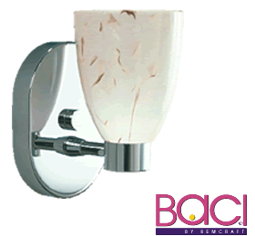

|

|
|
Why G-9 Halogen?
Baci’s G-9 Halogen Fixtures are designed around new technology,
line-voltage G-9 halogen lamps. They offer all the advantages of
traditional low-voltage halogen light sources — with none of
the disadvantages (e.g., heat, noise, and electrical interference).
They are as easy to install as any standard lighting fixture, can
be dimmed with inexpensive conventional dimmers, and can be used
with your choice of 25, 40, or 60 watt G-9 lamps. These compact
fixtures are available in both one- and two-light models and are
perfectly scaled for bathrooms, powder rooms, hallways, accent lighting,
and more.
Baci's G-9 Halogen Fixtures can be used with your choice of 25,
40 or 60 watt G-9 lamps at 120 volts for North America and 240 volts
for international applications. Rated lamp life is 2,000 hours with
830 lumens output for 60-watt clear lamps. These lamps are less
expensive than many low-voltage halogen lamps and, since they are
manufactured by Osram/Sylvania, they will be readily available everywhere.
Click here to browse the G-9
Halogen Wall Series Catalog.
|